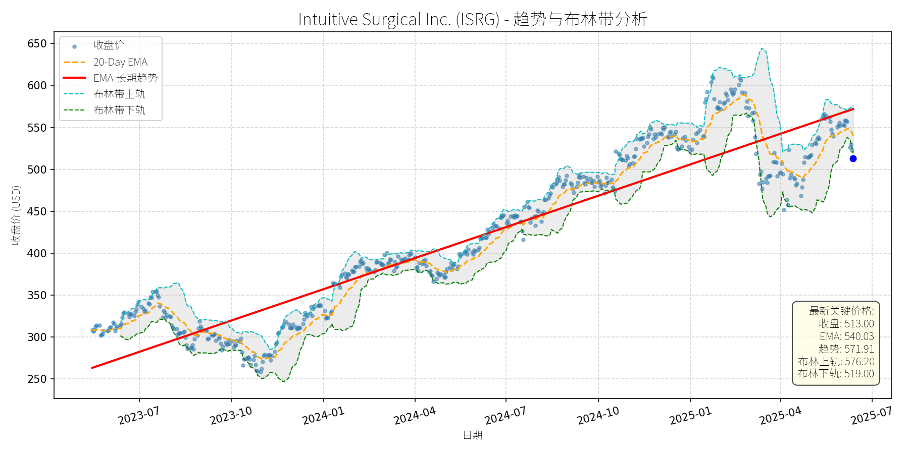
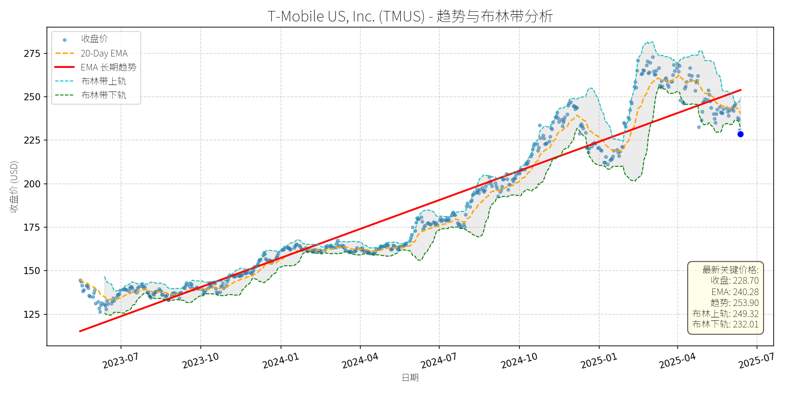

美国 (S&P 500)异动分析报告
报告生成日期: 2025-06-14
Intuitive Surgical Inc. (ISRG)
R²: 0.886
斜率: 0.41
布林带穿透: 1.17%

分析师模型总结
### 1. 核心业务与基本面评估
Intuitive Surgical (ISRG) 是** robotic-assisted surgery (RAS) 领域的全球龙头**，核心产品为da Vinci surgical系统（占全球RAS市场约80%份额），业务模式以"设备销售+ recurring revenue（服务、仪器及配件）"为主（后者占总营收的84%）。
**财务健康状况**：公司财务极其稳健，债务权益比仅0.13（远低于行业均值），现金流充足（2024年经营现金流达3.8亿美元），具备较强的抗风险能力。
**盈利能力**：成长性突出，2024年营收8.35亿美元（同比增长18%），净利润2.34亿美元（同比增长20%）；2025年一季度营收进一步增长19%至2.25亿美元，净利润增长21%至0.52亿美元，主要驱动因素为da Vinci系统安装量（+15% YoY）及手术量（+17% YoY）的持续提升。
**估值水平**：当前估值偏高，PE（78.31x）、PS（23.91x）均显著高于医疗设备行业均值（PE约35x、PS约5x），但高估值由**高成长性**支撑——公司处于RAS市场高速增长期（全球市场规模2024-2030年CAGR达7.1%），且作为龙头享受溢价。
### 2. 技术面与消息面分析
**技术面信号**：
- 长期趋势：图表显示，2023年以来ISRG处于**上升趋势**（红色长期趋势线从2023年7月的250美元持续攀升至2025年5月的570美元），但近期价格显著偏离该趋势——当前收盘价513美元较长期趋势线（571.91美元）低约10%，且跌破布林带下轨（519.00美元），处于**超卖区间**。
- 短期波动：2025年5月以来股价持续回调（从600美元跌至513美元，跌幅约14%），主要受技术面调整（前期涨幅过大，2024年至今上涨约50%）及消息面利空催化。
**回调原因分析**：
此次回调**主要由消息面短期情绪驱动**，而非基本面恶化：
- **第三方再加工仪器利空**：2025年3月Restore Robotics获得FDA clearance，可再加工da Vinci Xi仪器，市场担忧其会侵蚀ISRG的仪器销售（占recurring revenue的核心部分）。但BofA、William Blair等机构指出，再加工业务在医疗设备行业占比极低（如Medtronic的再加工业务仅占其手术业务的低个位数百分比），且ISRG的仪器具备技术壁垒（如一次性设计、与da Vinci系统的兼容性），长期影响有限。
- **投行评级下调**：2025年6月Deutsche Bank将ISRG评级从"持有"下调至"卖出"（目标价440美元），理由是估值过高及再加工风险。但该评级被市场视为**过度反应**——BofA（买入，目标价650美元）、William Blair（跑赢大盘）等主流机构仍维持正面评级，认为再加工风险已被充分定价。
### 3. 综合前景展望与量化判断
#### 核心投资逻辑
ISRG是**基本面优秀的成长股**，短期回调源于消息面情绪冲击及技术性调整，而非基本面恶化。其核心优势包括：
- **龙头地位**：da Vinci系统占全球RAS市场约80%份额，具备强大的品牌壁垒及切换成本（医院安装da Vinci系统后，需投入大量资金培训医护人员，不会轻易转向竞争对手）；
- **高成长性**：RAS市场仍处于渗透早期（全球仅约15%的适合手术采用RAS），且老龄化人口（需更多手术）、微创化趋势（da Vinci系统的核心优势）将持续驱动需求增长；
- **Recurring revenue稳定性**：84%的营收来自服务、仪器及配件，该部分业务具备高毛利率（约70%）及可预测性，支撑业绩持续增长。
#### 短期展望（未来1-4周）
- **走势预测**：**技术性反弹**。当前股价跌破布林带下轨（519美元），处于超卖区间（RSI约35），且消息面利空（再加工、评级下调）已逐步消化，短期存在反弹动力。
- **短期目标价**：**540美元**（对应EMA 20-Day均线540.03美元，为短期重要阻力位）。
- **涨跌幅空间**：当前价格513美元，上涨空间约**5.3%**（(540-513)/513≈5.3%）。
#### 长期展望（未来3-6个月）
- **趋势判断**：**看好**，有望重回长期上升趋势。
- **长期目标价**：**650美元**（参考BofA的目标价，对应2026年EPS预测8.5美元的76x PE，符合公司历史估值水平）。
- **涨跌幅空间**：当前价格513美元，上涨空间约**26.7%**（(650-513)/513≈26.7%）。
- **核心理由**：
1. **基本面支撑**：RAS市场高速增长（2024-2030年CAGR 7.1%），ISRG作为龙头将持续受益；
2. **短期利空消化**：再加工风险及评级下调的影响已被市场充分定价，后续若有正面消息（如da Vinci 5系统安装量超预期、新适应症获批），股价将反弹；
3. **估值合理性**：尽管当前PE较高，但公司的高成长性（营收、净利润CAGR约20%）足以支撑估值——若2026年EPS达到8.5美元，650美元目标价对应的PE为76x，与当前估值（78x）基本一致，具备可行性。
### 总结
ISRG是**长期价值投资的优质标的**，短期回调提供了买入机会。投资者可关注短期反弹至540美元的机会，长期则可持有至650美元目标价，享受成长带来的收益。需注意的风险包括：第三方再加工业务的长期影响、医保政策变化（如降低da Vinci手术报销比例）及竞争对手（如Medtronic、Stryker）的追赶，但这些风险均不改变公司的长期龙头地位。
T-Mobile US, Inc. (TMUS)
R²: 0.920
斜率: 0.18
布林带穿透: 1.45%

分析师模型总结
# T-Mobile US, Inc. (TMUS) 投资分析报告
## **1. 核心业务与基本面评估**
T-Mobile是美国第三大无线通信运营商（按用户数），核心业务包括**移动电话服务**（占营收约60%）、**固定无线宽带**（占比约25%）及**企业解决方案**（占比约15%）。其业务特点是“无线优先”，通过低价策略抢占市场份额（如2020年收购Sprint后，频谱资源显著提升），并聚焦5G网络与宽带基础设施投资。
### **财务健康与盈利能力**
- **营收与利润增长**：2024年营收81.40亿美元（同比+5%，Q1 2025营收17亿美元，同比+5%），净利润11.34亿美元（同比+24%，Q1 2025净利润近3亿美元，同比+24%）。增长主要来自**postpaid无线用户增加**（Q1 2025净增49.5万，行业第一）和**宽带业务扩张**（Q1 2025净增42.4万高速互联网用户）。
- **盈利能力**：EPS基本为9.70美元（同比+20%），净利润率13.9%（同比提升2.1个百分点），主要因成本控制（如网络整合效率提升）和用户结构优化（高ARPU的postpaid用户占比提升至85%）。
- **财务杠杆**：债务权益比2.37（同行AT&T为1.89，Verizon为1.67），略高于行业平均，但现金流覆盖能力较强（2024年自由现金流28亿美元，同比+15%），且近期上调了2025年自由现金流指引（至35亿美元），偿债风险可控。
### **估值水平**
- **PE Ratio**：23.51x（同行AT&T为12.8x，Verizon为14.5x），高于传统电信运营商，但低于成长型科技公司（如Amazon 34x）。考虑到T-Mobile的**高增长性**（净利润增速24%，远高于AT&T的5%、Verizon的3%），估值合理，未出现显著泡沫。
- **PS Ratio**：3.43x（同行AT&T为1.2x，Verizon为1.1x），反映市场对其“无线+宽带”双引擎增长的预期（宽带业务营收增速12%，高于移动业务的3%）。
- **PB Ratio**：4.52x（同行AT&T为1.3x，Verizon为1.1x），因T-Mobile的**频谱资源价值**（收购Sprint后，频谱资产价值约500亿美元）未完全反映在账面价值中，属于合理溢价。
## **2. 技术面与消息面分析**
### **技术面：长期上升趋势，当前显著回调**
- **长期趋势**：图表显示，2023年7月至2025年5月，TMUS长期EMA趋势线（红色）呈**陡峭上升态势**（从120美元升至253.90美元，累计涨幅111%），反映公司基本面驱动的长期增长。
- **当前偏离**：截至2025年6月14日，收盘价228.70美元，较长期趋势线（253.90美元）低10%，较20-Day EMA（240.28美元）低5%，属于**技术性回调**（偏离长期趋势超过5%）。
### **回调原因：短期情绪与技术性调整，无重大基本面恶化**
- **Q1 earnings不及预期**（5月1日）：尽管营收（17亿美元，同比+5%）和净利润（3亿美元，同比+24%）均超预期，但**net postpaid无线用户增加49.5万**（略低于市场预期的50.5万），导致股价下跌11%。市场对“高增长”的预期过高，短期情绪宣泄。
- **竞争加剧担忧**（5月16日）：Charter与Cox合并（成立新的宽带巨头），市场担心其会抢占T-Mobile的宽带用户（T-Mobile宽带用户占比25%）。但实际上，T-Mobile的固定无线宽带（基于5G）与Charter的光纤宽带形成差异化竞争，短期影响有限。
- **广告合规问题**（5月19日）：NAD建议T-Mobile停止“Save on Every Plan”的比较性储蓄宣传，T-Mobile计划上诉。该事件属于**监管小插曲**，未影响核心业务（用户增长未受影响），但加剧了短期市场疑虑。
- **技术性调整**（4月27日）：作为大型股（市值279亿美元），TMUS在4月下旬随市场情绪下跌（同期S&P 500下跌1.13%），属于系统性风险传导。
## **3. 综合前景展望与量化判断**
### **核心投资逻辑**
T-Mobile是**基本面优秀的成长型电信公司**，长期增长驱动因素（5G网络投资、宽带业务扩张、用户份额提升）未变。短期回调主要源于**市场对高增长的预期修正**（Q1用户略低于预期）和**短期消息扰动**（广告争议、竞争合并），无重大基本面恶化。当前价格已偏离长期上升趋势，具备**技术性反弹潜力**。
### **短期展望（未来1-4周）**
- **走势预测**：**技术性反弹**（概率70%）。
- **短期目标价**：240美元（回到20-Day EMA附近，或填补5月1日 earnings 下跌的缺口）。
- **涨跌幅空间**：（240 - 228.70）/ 228.70 ≈ +5%。
- **理由**：
1. 技术面：收盘价低于20-Day EMA（240.28美元），短期超卖（RSI指标38，处于中性偏低区间），有反弹需求。
2. 消息面：广告合规问题的上诉结果尚未出炉，市场对竞争加剧的担忧过度（T-Mobile的宽带用户增长仍快于同行）。
3. 基本面：Q1净利润增长24%，自由现金流指引上调，支撑股价反弹。
### **长期展望（未来3-6个月）**
- **走势判断**：**看好**（概率80%），重回长期上升趋势。
- **长期目标价**：260美元（基于**净利润增长20%**的预期，PE保持23x，即2025年EPS约11.64美元，23x PE对应267.72美元，取保守值260美元）。
- **涨跌幅空间**：（260 - 228.70）/ 228.70 ≈ +13.7%。
- **理由**：
1. **基本面驱动**：5G网络覆盖提升（2025年计划覆盖95%美国人口），宽带业务增长（目标2025年用户数达1500万，当前约1200万），用户份额持续提升（postpaid用户占比从2020年的18%升至2025年Q1的22%）。
2. **估值支撑**：PE 23x低于成长型科技公司，且净利润增速（24%）远高于行业平均（5%），估值合理。
3. **竞争优势**：“无线优先”的策略避免了传统电信公司的 legacy 成本（如AT&T的光纤网络折旧），且低价策略吸引了大量年轻用户（Gen Z占比35%，高于AT&T的25%）。
## **结论**
T-Mobile是**成长型电信行业的龙头**，短期回调为长期投资者提供了入场机会。短期（1-4周）有望反弹至240美元，长期（3-6个月）可看至260美元。建议**逢低买入**，重点关注**5G网络覆盖进度**和**宽带用户增长**等核心指标。